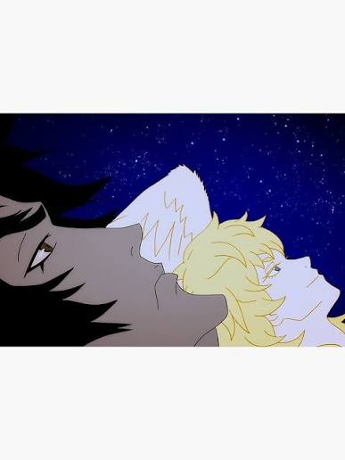
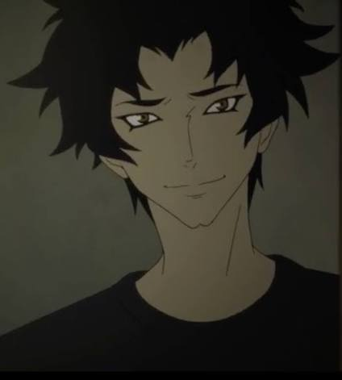
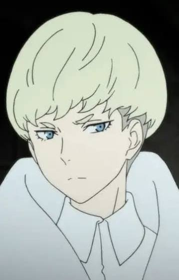

Devilman Crybaby (estilizado como DEVILMAN crybaby) é uma série de anime japonesa baseada no mangá Devilman de Go Nagai. Foi dirigido por Masaaki Yuasa e escrito por Ichirō Ōkouchi, e estreou em 5 de janeiro de 2018, disponível para streaming mundial no Netflix como uma série original

Akira Fudo é o protagonista de Devilman Crybaby. Inicialmente um jovem tímido e sensível, sua vida muda ao se fundir com o poderoso demônio Amon. Apesar de adquirir força, velocidade e habilidades sobre-humanas, Akira mantém seu coração humano e sua compaixão pelas pessoas. Ao longo da história, ele enfrenta uma guerra entre humanos e demônios enquanto luta para proteger aqueles que ama e preservar sua humanidade.

Ryo Asuka é um dos personagens centrais de Devilman Crybaby. Inteligente, frio e determinado, ele convence Akira Fudo a enfrentar a ameaça dos demônios. Apesar de sua aparência calma e racional, Ryo esconde segredos que influenciam profundamente os acontecimentos da história. Sua relação com Akira é um dos elementos mais importantes da trama, envolvendo amizade, conflitos e revelações que mudam o destino da humanidade.